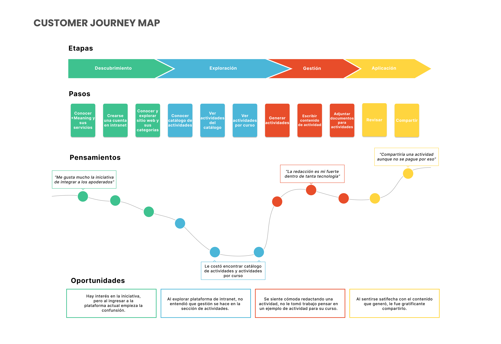

PROCESO
El proyecto lo desarrollamos en dupla, comenzó a fines de 2019 y tuvo un periodo de 3 semanas. En este tiempo nos organizamos de tal manera de generar un prototipo funcional centrado en nuestro usuario objetivo.
Para esto utilizamos la metodología de trabajo centrada en el usuario Design Thinking, donde comenzamos con la etapa de empatizar, generando en primera instancia entrevistas a profesores y apoderados.
Realizamos un stakeholders map para generar una representación visual de los roles y tipos de relaciones involucradas en el servicio. Además hicimos un benchmark, el cual es un proceso continuo y sistemático para evaluar servicios similares al que estamos enfocados. Se seleccionaron 4 servicios que generan redes entre instituciones de estudio y apoderados.
A continuación pasamos a definir, donde sintetizamos la información recopilada en la etapa anterior. Diferentes herramientas nos permitieron encontrar los puntos de dolor de nuestro usuario durante el uso del servicio.
Entre ellas hicimos un user persona que es la representación ficticia construida en base a las entrevistas de usuario, para analizar la interacción de esta persona con la interfaz hicimos un costumer journey map, esta herramienta se utiliza para visualizar los diferentes enfoques de las interacciones que surgen en el uso de la plataforma, ya sean positivas o negativas.
Por otro lado hicimos un service blueprint ya que esta herramienta gráfica muestra los componentes del servicio cubriendo los diferentes escenarios, acciones, usuarios, tecnologías y materiales que interactúan entre sí.

Hecho esto, generamos un diagrama de afinidad, bajada de información obtenida en la etapa anterior re agrupandola según semejanzas, para luego crear insights, que son la obtención de descubrimientos que nos permitieron dirigir las diferentes soluciones a necesidades y deseos reales de nuestros/as usuario/as.
A continuación en la etapa de ideación, creamos How might we? para incentivar la búsqueda de soluciones a los descubrimientos. Una vez que definimos soluciones concretas, pasamos a generar un card sorting, técnica de categorización de contenidos con los mismos usuarios.
En consecuencia de toda la investigación, uso de herramientas y metodologías, se realizó un prototipo de alta fidelidad, el cual se diseñó en el programa Figma, además en este mismo, se realizó una guía de estilo, para definir paleta de colores, tipografías, iconos, sombreados, entre otros elementos.

Puedes revisar e interactuar con el prototipo aquí